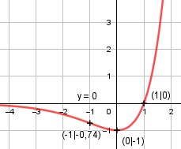

Aufgabe 139 f(x) = (x - 1) * ex Produktregel erste Ableitung: u = x - 1, u' = 1 v = ex, v' = ex f'(x) = 1 * ex + ex * (x - 1) f'(x) = ex * (1 + x - 1) = x * ex Produktregel zweite Ableitung: u = x, u' = 1 v = ex, v' = ex f''(x) = 1 * ex + ex * x = ex * (x + 1) - e2 * ex - ex * e2 * (1 - x) f''(x) = ----------------------------- e2x ex * e2 * (- 1 - 1 + x) f''(x) = ------------------------- e2x e2 * (x - 2) f''(x) = -------------- ex Zur Beurteilung, ob f'''(x) ≠ 0: (Begründung siehe Aufgabe 105) u = e2 * (x - 2), u' = e2 u' e2 f'''(x) = --- = ----- ≠ 0 für alle x v ex ex ist > 0 für alle x Definitionsbereich: -∞ < x < ∞ Waagerechte Asymptote: (x - 1) * ex geht gegen 0 für x gegen -∞ Wertebereich: f(x) wird dann am kleinsten, wenn x = 0 (Extrempunkt) f(0) = -1 --> -1 ≤ f(x) < ∞ Symmetrie zur y-Achse bzw. zum Punkt (0|0): f(-x) = (-x - 1) * e-x = -(x + 1) * e-x ≠ f(x) --> keine Achsensymmetrie -f(-x) = (x + 1) * e-x ≠ f(x) --> keine Punktsymmetrie Nullstellen: f(x) = 0 (x - 1) * ex = 0 |:ex x - 1 = 0 |+1 x = 1 N(1|0) Schnittpunkt mit der y-Achse: x = 0 f(0) = (0 - 1) * e0 = -1 Sy(0|-1) Extrempunkte: f'(x) = 0 ex * x = 0 |:ex x = 0, f(0) = -1 f''(0) = e0 * 0 + e0 = 1 > 0 --> Tiefpunkt (0|-1) Wendepunkte: f''(x) = 0 ex * (x + 1) = 0 |:ex x + 1 = 0 |-1 x = -1, f(-1) = (-1 - 1) * e-1 = -0,74 >WP(-1|-0,74) Graph:
